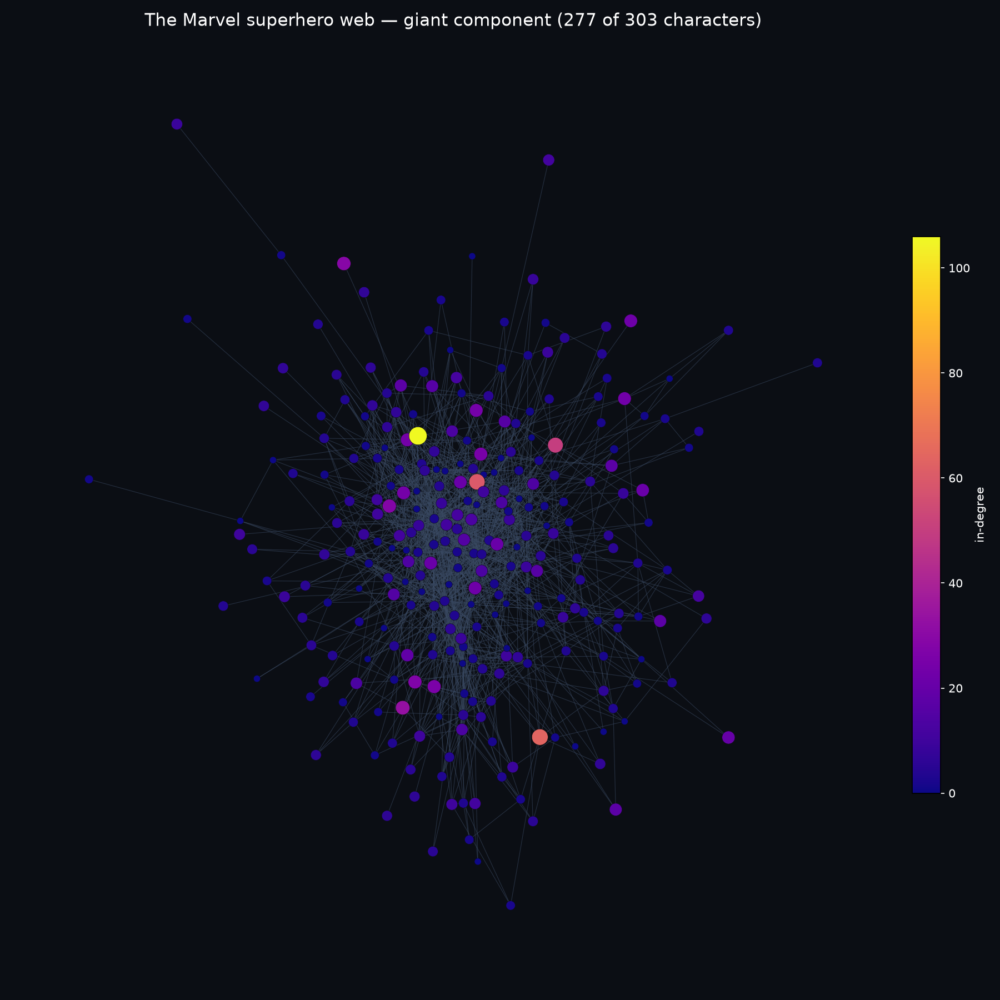
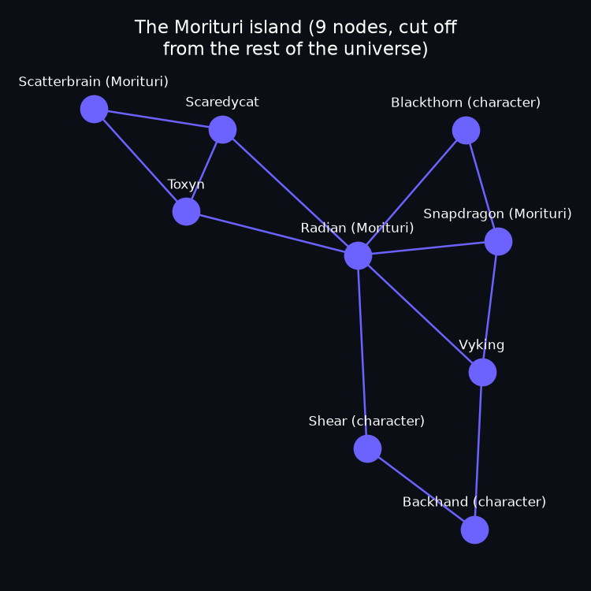

Meet the network: 303 heroes, 17 loners, and one island of Morituri
What we asked
Week 1 hands every group the same frozen snapshot: 303 Marvel characters from Wikipedia's
Category:Marvel Comics superheroes, with a directed edge A → B whenever A's article
links to B's. Before doing anything fancy with it, we wanted three plain questions answered:
how connected is this thing really, who's the most talked about versus who talks about others
the most, and is it really one single blob — or does it secretly fall apart into pieces?
What we did
We loaded the edge list and node roster with every node added first, so the isolated characters (people whose articles link to nobody, and whom nobody links to) survive instead of quietly vanishing from the graph. That gave us:
The gap between 1,784 and 1,434 isn't a bug — it's reciprocity. 350 character pairs link to each other in both directions (e.g. two Avengers who each mention the other), so those 700 directed edges collapse into 350 shared undirected edges once direction stops mattering; the remaining 1,084 edges are one-way and pass straight through. 350 + 1,084 = 1,434.
Who's linked to, and who links out
In-degree and out-degree tell very different stories about the same page. In-degree is a proxy for fame — how often other characters' articles bother to mention you. Out-degree is a proxy for how thorough the article is — how many other characters get name-dropped in your own page's "allies," "teams," and "enemies" sections.
| Top 5 by in-degree | |
|---|---|
| Spider-Man | 106 |
| Hulk | 64 |
| Wolverine | 60 |
| Doctor Strange | 50 |
| Deadpool | 33 |
| Top 5 by out-degree | |
|---|---|
| Betsy Braddock | 28 |
| Cloak and Dagger | 24 |
| Adam Warlock | 22 |
| Venom | 21 |
| She-Hulk | 20 |
Almost no overlap between the two lists. Spider-Man is linked to by roughly a third of the entire giant component, but his own page doesn't need to name-drop many other heroes to make its point — it's already the most famous article. Characters like Betsy Braddock, on the other hand, have had decades of tangled team-roster history (X-Men, Excalibur, X-Force...), so their pages spend a lot of words cross-referencing teammates — high out-degree, but nowhere near as famous as an inbound link target.
The network, drawn

What surprised us: an island of Morituri
We expected the isolates (17 characters nobody links to and who link to nobody) — the course page warned us they were worth a look. What we didn't expect was a second, self-contained cluster: a 9-node clique of characters from Marvel's "Strikeforce: Morituri" series, all densely linked to each other and to nobody else in the whole 303-character set.

What's next
Next week we start pulling the real text behind these pages apart. For now: check the real-degrees and two-distributions explorables against our numbers above — they should match, since we're all working from the same frozen snapshot.